几何体的基本操作¶
Arctern 实现了多个符合 OGC 标准的 GIS 处理函数。它们被封装成 GeoSeries 类的属性和方法。其中的方法又分为一元操作方法和二元操作方法。
GeoSeries.length¶
功能： 计算 GeoSeries 中每个几何体的长度。计算几何体长度的方法如下：
POINT / MULTIPOINT / POLYGON / MULTIPOLYGON / CURVEPOLYGON / MULTICURVE: 0
LINESTRING: 一条直线的长度。
MULTILINESTRING: 多条直线的长度总和。
CIRCULARSTRING: 一条曲线的长度。
MULTISURFACE / COMPOUNDCURVE / GEOMETRYCOLLECTION: 对于 3 种类型中的几何体集合，计算集合中所有几何体的长度之和。
返回： GeoSeries 中每个几何体的长度。
>>> from arctern import GeoSeries
>>> s = GeoSeries(["POINT(1 1)", "LINESTRING (0 0, 0 2)", "POLYGON ((0 0,0 4,4 4,0 0))"])
>>> s.length
0 0.0
1 2.0
2 0.0
dtype: float64
GeoSeries.area¶
功能： 计算 GeoSeries 中每个几何体的 2D 笛卡尔（平面）面积。计算几何体面积的方法如下：
POINT / MULTIPOINT / LINESTRING / MULTILINESTRING / CIRCULARSTRING: 0
POLYGON: 单个多边形的面积。
MULTIPOLYGON: 多个多边形的面积总和。
CURVEPOLYGON: 单个曲线多边形的面积。
MULTIPOLYGON: 多个多边形的面积总和。
MULTISURFACE / COMPOUNDCURVE / GEOMETRYCOLLECTION: 对于 3 种类型中的几何体集合，计算集合中所有几何体的面积之和。
返回： GeoSeries 中每个几何体的 2D 笛卡尔（平面）面积。
>>> from arctern import GeoSeries
>>> s = GeoSeries(["POINT(1 1)", "POLYGON ((2 1, 3 3, 1 3, 2 1))"])
>>> s.area
0 0.0
1 2.0
dtype: float64
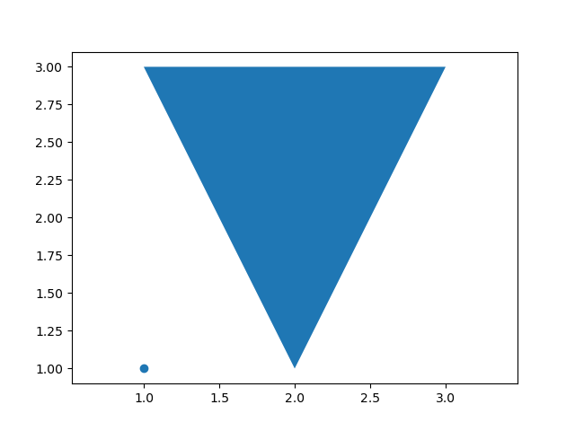
GeoSeries.centroid¶
功能： 返回 GeoSeries 中每个几何体的中心。
返回： GeoSeries 中每个几何体的中心。
>>> from arctern import GeoSeries
>>> s = GeoSeries(["POLYGON ((1 1, 1.5 1, 1.5 1.25, 1 1.25, 1 1))", "POLYGON ((2 1, 3 3, 1 3, 2 1))"])
>>> s.centroid
0 POINT (1.25 1.125)
1 POINT (2.0 2.33333333333333)
dtype: float64
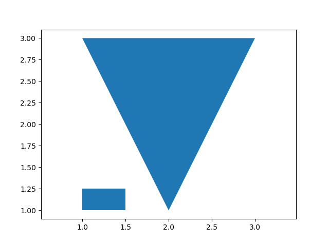
GeoSeries.is_valid¶
功能： 检查 GeoSeries 中的每个几何体是否为有效格式，例如 WKT 和 WKB 格式。
返回： GeoSeries 中每个元素对应的布尔值，指示元素是否为有效的。
True: 几何体是有效的。
False: 几何体是无效的。
>>> from arctern import GeoSeries
>>> s = GeoSeries(["POINT(1 1)", "POINT(1)"])
>>> s.is_valid
0 True
1 False
dtype: bool
GeoSeries.is_simple¶
功能： 检查 GeoSeries 中的每个几何体是否为“简单”的。此处的“简单”是指几何体没有异常点，例如自相交或自相切。
返回： GeoSeries 中每个元素对应的布尔值，指示元素是否为“简单”的。
True: 几何体是“简单”的。
False: 几何体不是“简单”的。
>>> from arctern import GeoSeries
>>> s = GeoSeries(["POINT(1 1)", "LINESTRING (1 2,2 3,1 2,4 6,2 2,1 6)"])
>>> s.is_simple
0 True
1 False
dtype: bool
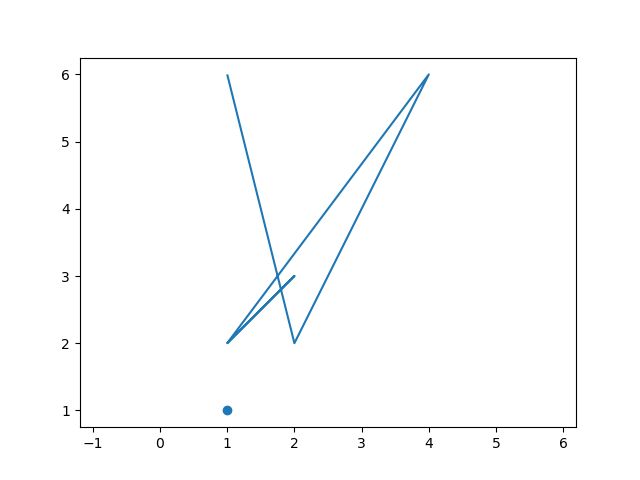
GeoSeries.convex_hull¶
功能： 对于 GeoSeries 中的每个几何体，返回包围它的最小凸几何体。
对于多边形，返回的几何体是包围它的最小凸几何体。
对于几何体集合，返回的几何体是将集合中的所有几何体包围起来的最小凸几何体。
对于点或线，返回的几何体与原来的几何体相同。
返回： 凸几何体的序列。
>>> from arctern import GeoSeries
>>> s = GeoSeries(["POINT(1 1)", "POLYGON ((2 1, 5 1, 6 5, 4 2, 1 5, 2 1))"])
>>> s.convex_hull
0 POINT (1 1)
1 POLYGON ((2 1,1 5,6 5,5 1,2 1))
dtype: GeoDtype
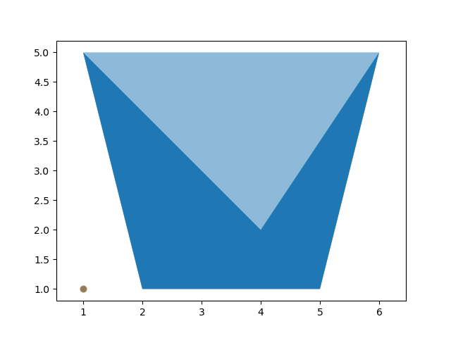
GeoSeries.npoints¶
功能： 返回 GeoSeries 中每个几何体的点的数量。
返回： GeoSeries 中每个几何体的点的数量。
>>> from arctern import GeoSeries
>>> s = GeoSeries(["POINT(1 1)", "POLYGON ((1 1, 3 1, 3 3, 1 3, 1 1))"])
>>> s.npoints
0 1
1 5
dtype: int64
GeoSeries.curve_to_line¶
功能： 将每个几何体中的曲线转换为近似线性表示。例如，
将 CIRCULAR STRING 转换为 LINESTRING，
将 CURVEPOLYGON 转换为 POLYGON，
将 MULTISURFACE 转换为 MULTIPOLYGON。
返回： 转换后的线性几何体。
>>> from arctern import GeoSeries
>>> s = GeoSeries(["CURVEPOLYGON(CIRCULARSTRING(0 0, 4 0, 4 4, 0 4, 0 0))"])
>>> s.curve_to_line()
0 POLYGON ((0 0,0.144384846968599 -0.1346410480079,0.297810064436987 -0.258882339403264,0.459528180167908 -0.372118583103131,0.628751319757384 -0.473798103510646,0.804655045079528 -0.563425528223178,0.986382370866408 -0.640564201436803,1.17304793985397 -0.704838311289649,1.36374233615356 -0.755934720779265,1.55753651583507 -0.793604493334868,1.75348633313513 -0.817664105611044,1.9506371402407 -0.827996341595309,2.14802843823713 -0.824550863672528,2.34469855656221 -0.807344457864786,2.53968933816861 -0.776460952051593,2.73205080756895 -0.732050807568896,2.92084579902018 -0.674330386176507,3.10515452230186 -0.603580895965422,3.28407904384051 -0.520147021340222,3.45674766135266 -0.424435243751333,3.6223191506906 -0.316911861358278,3.7799868642013 -0.198100717271856,3.92898266063321 -0.068580647443195,4.06858064744324 0.071017339366811,4.19810071727193 0.220013135798766,4.31691186135845 0.377680849309456,4.42443524375153 0.543252338647363,4.52014702134033 0.715920956159607,4.60358089596548 0.894845477698254,4.67433038617651 1.07915420097987,4.73205080756907 1.26794919243116,4.77646095205159 1.46031066183144,4.80734445786493 1.65530144343791,4.82455086367258 1.85197156176298,4.82799634159551 2.04936285975941,4.81766410561113 2.24651366686498,4.7936044933349 2.44246348416505,4.75593472077935 2.63625766384655,4.70483831128968 2.82695206014614,4.64056420143697 3.0136176291337,4.56342552822321 3.19534495492053,4.47379810351072 3.37124868024273,4.3721185831032 3.54047181983219,4.2588823394035 3.70218993556301,4.13464104800801 3.85561515303141,4 4,3.85561515303141 4.13464104800801,3.70218993556307 4.25888233940338,3.54047181983219 4.3721185831032,3.37124868024273 4.47379810351072,3.19534495492053 4.56342552822321,3.0136176291337 4.64056420143697,2.82695206014614 4.70483831128968,2.63625766384655 4.75593472077935,2.44246348416505 4.7936044933349,2.24651366686498 4.81766410561113,2.04936285975941 4.82799634159551,1.85197156176298 4.82455086367258,1.65530144343791 4.80734445786493,1.46031066183144 4.77646095205159,1.26794919243116 4.73205080756907,1.07915420097987 4.67433038617651,0.894845477698254 4.60358089596548,0.715920956159607 4.52014702134033,0.543252338647363 4.42443524375153,0.377680849309442 4.31691186135845,0.220013135798759 4.19810071727193,0.071017339366808 4.06858064744324,-0.068580647443198 3.92898266063321,-0.198100717271863 3.7799868642013,-0.316911861358292 3.6223191506906,-0.424435243751333 3.45674766135266,-0.520147021340222 3.28407904384051,-0.603580895965422 3.10515452230175,-0.674330386176507 2.92084579902018,-0.732050807568896 2.73205080756895,-0.776460952051593 2.53968933816861,-0.807344457864786 2.34469855656221,-0.824550863672528 2.14802843823713,-0.827996341595309 1.9506371402407,-0.817664105611044 1.75348633313513,-0.793604493334868 1.55753651583507,-0.755934720779265 1.36374233615356,-0.704838311289649 1.17304793985397,-0.640564201436803 0.986382370866408,-0.563425528223178 0.804655045079528,-0.473798103510646 0.628751319757356,-0.372118583103131 0.459528180167908,-0.258882339403271 0.29781006443698,-0.134641048007893 0.144384846968599,0 0))
dtype: GeoDtype
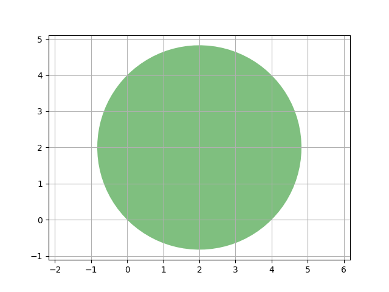
GeoSeries.simplify(tolerance)¶
功能： 返回使用 Douglas-Peucker 算法 计算的 GeoSeries 中每个几何体的简化版本。
返回： 简化的几何体的序列。
>>> from arctern import GeoSeries
>>> s = GeoSeries(["POLYGON ((1 1,1 2,2 2,2 1,1 1))", "CIRCULARSTRING (0 0,1 1,2 0)"])
>>> s.simplify(1.0)
0 POLYGON ((1 1,1 2,2 2,2 1,1 1))
1 LINESTRING (0 0,2 0)
dtype: GeoDtype
GeoSeries.envelope¶
功能： 返回 GeoSeries 中每个几何体的最小边界矩形。边界矩形是一个矩形几何体对象，其边平行于坐标轴。
返回： GeoSeries 中每个几何体的最小边界矩形。
>>> from arctern import GeoSeries
>>> s = GeoSeries(["POINT(1 1)", "POLYGON ((4.76 3.16, 3.67 5.17, 2.85 2.21, 4.04 0.99, 7.00 2.83))"])
>>> s.envelope
0 POINT (1 1)
1 POLYGON ((2.85 0.99,2.85 5.17,7.0 5.17,7.0 0.99,2.85 0.99))
dtype: GeoDtype
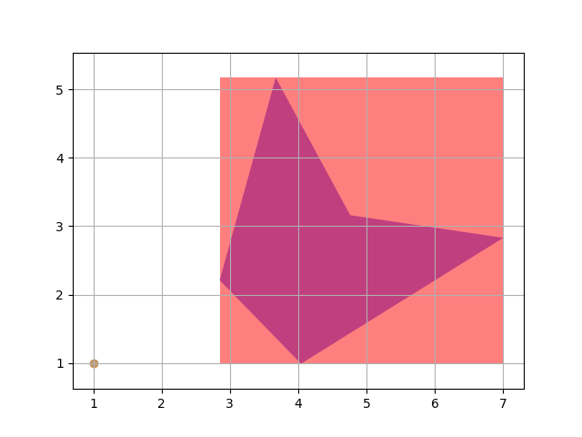
GeoSeries.buffer(distance)¶
功能： 对于每个几何体，将其所有点向远离几何体中心的方向移动以构造新的几何体。移动距离被指定为
distance。如果
distance> 0，则新几何体是原来的几何体之外的按比例放大版本。如果
distance< 0，则新几何体是原来的几何体内部的按比例缩小版本。
返回： 几何体序列。
示例 1¶
将 distance 设为 0，则返回一个空的多边形。
>>> from arctern import GeoSeries
>>> s = GeoSeries(["POINT (0 1)"])
>>> s.buffer(0.0)
0 POLYGON EMPTY
dtype: GeoDtype
示例 2¶
将 distance 设为 1.0，则返回一个多边形。该多边形近似表示一个半径为 1.0、圆心为 Point(0, 1) 的圆，该圆的面积为近似为 3.14。
>>> from arctern import GeoSeries
>>> s = GeoSeries(["POINT (0 1)"])
>>> result = s.buffer(1.0)
>>> result
0 POLYGON ((1 1,0.998629534754574 0.947664043757056,0.994521895368273 0.895471536732347,0.987688340595138 0.843565534959769,0.978147600733806 0.792088309182241,0.965925826289068 0.741180954897479,0.951056516295154 0.690983005625053,0.933580426497202 0.6416320504547,0.913545457642601 0.5932633569242,0.891006524188368 0.546009500260454,0.866025403784439 0.5,0.838670567945424 0.455360964984973,0.809016994374948 0.412214747707527,0.777145961456971 0.370679608950163,0.743144825477395 0.330869393641142,0.707106781186548 0.292893218813453,0.669130606358859 0.256855174522606,0.629320391049838 0.22285403854303,0.587785252292474 0.190983005625053,0.544639035015028 0.161329432054576,0.5 0.133974596215562,0.453990499739548 0.108993475811633,0.406736643075801 0.0864545423574,0.358367949545302 0.066419573502799,0.309016994374949 0.048943483704847,0.258819045102522 0.034074173710932,0.207911690817761 0.021852399266195,0.156434465040233 0.012311659404863,0.104528463267656 0.005478104631727,0.052335956242946 0.001370465245426,0.0 0.0,-0.052335956242941 0.001370465245426,-0.104528463267651 0.005478104631726,-0.156434465040228 0.012311659404862,-0.207911690817756 0.021852399266194,-0.258819045102518 0.034074173710931,-0.309016994374944 0.048943483704845,-0.358367949545297 0.066419573502797,-0.406736643075797 0.086454542357398,-0.453990499739544 0.10899347581163,-0.5 0.13397459621556,-0.544639035015024 0.161329432054574,-0.58778525229247 0.19098300562505,-0.629320391049834 0.222854038543026,-0.669130606358855 0.256855174522603,-0.707106781186544 0.292893218813449,-0.743144825477391 0.330869393641138,-0.777145961456968 0.370679608950159,-0.809016994374944 0.412214747707523,-0.838670567945421 0.455360964984969,-0.866025403784436 0.5,-0.891006524188365 0.546009500260448,-0.913545457642599 0.593263356924195,-0.9335804264972 0.641632050454694,-0.951056516295152 0.690983005625047,-0.965925826289067 0.741180954897473,-0.978147600733804 0.792088309182235,-0.987688340595137 0.843565534959763,-0.994521895368273 0.89547153673234,-0.998629534754574 0.94766404375705,-1.0 1.0,-0.998629534754574 1.05233595624294,-0.994521895368274 1.10452846326765,-0.987688340595139 1.15643446504022,-0.978147600733807 1.20791169081775,-0.96592582628907 1.25881904510251,-0.951056516295156 1.30901699437494,-0.933580426497205 1.35836794954529,-0.913545457642604 1.40673664307579,-0.891006524188372 1.45399049973954,-0.866025403784443 1.5,-0.838670567945429 1.54463903501502,-0.809016994374952 1.58778525229247,-0.777145961456976 1.62932039104983,-0.7431448254774 1.66913060635885,-0.707106781186554 1.70710678118654,-0.669130606358865 1.74314482547739,-0.629320391049845 1.77714596145697,-0.58778525229248 1.80901699437494,-0.544639035015034 1.83867056794542,-0.5 1.86602540378443,-0.453990499739554 1.89100652418836,-0.406736643075807 1.9135454576426,-0.358367949545307 1.9335804264972,-0.309016994374954 1.95105651629515,-0.258819045102528 1.96592582628907,-0.207911690817766 1.9781476007338,-0.156434465040237 1.98768834059514,-0.10452846326766 1.99452189536827,-0.05233595624295 1.99862953475457,-0.0 2.0,0.052335956242939 1.99862953475457,0.104528463267649 1.99452189536827,0.156434465040226 1.98768834059514,0.207911690817755 1.97814760073381,0.258819045102517 1.96592582628907,0.309016994374944 1.95105651629515,0.358367949545297 1.9335804264972,0.406736643075797 1.9135454576426,0.453990499739544 1.89100652418837,0.5 1.86602540378444,0.544639035015025 1.83867056794543,0.587785252292471 1.80901699437495,0.629320391049836 1.77714596145697,0.669130606358857 1.7431448254774,0.707106781186547 1.70710678118655,0.743144825477394 1.66913060635886,0.777145961456971 1.62932039104984,0.809016994374947 1.58778525229247,0.838670567945424 1.54463903501503,0.866025403784439 1.5,0.891006524188368 1.45399049973955,0.913545457642601 1.4067366430758,0.933580426497202 1.3583679495453,0.951056516295154 1.30901699437495,0.965925826289069 1.25881904510252,0.978147600733806 1.20791169081776,0.987688340595138 1.15643446504023,0.994521895368274 1.10452846326765,0.998629534754574 1.05233595624294,1 1))
dtype: GeoDtype
>>> result.area
0 3.140157
dtype: float64
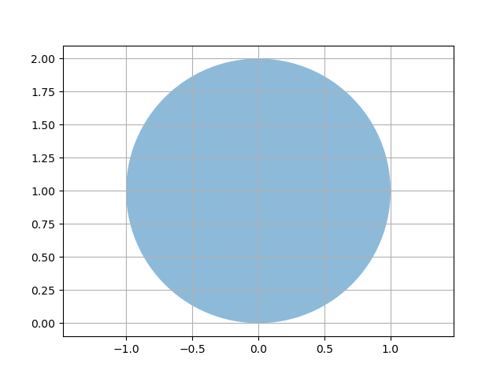
GeoSeries.precision_reduce(precision)¶
功能： 对于 GeoSeries 中每个几何体的坐标，将有效数字的位数减少到给定的
precision。 最后一位小数位的数字将四舍五入。返回： 精度降低后的几何体序列。
以下示例中，由于设置的有效位数是 3， 结果中所有点的坐标只保留了 3 位有效数字。其中 POINT (1.333 2.666) 的坐标 2.666 的最后有效位采用四舍五入的规则，变为 2.67 。
>>> from arctern import GeoSeries
>>> s = GeoSeries(["POINT (1.333 2.666)", "POINT (2.655 4.447)"])
>>> s.precision_reduce(3)
0 POINT (1.33 2.67)
1 POINT (2.66 4.45)
dtype: GeoDtype
GeoSeries.make_valid¶
功能： 在不丢失任何输入顶点的情况下，为 GeoSeries 中的每个几何体创建有效的表示。
如果几何体已经有效，则将不执行任何操作。
如果无法使几何体有效，则将其设置为 None。
返回： 有效几何体的序列。
在以下示例中，输入的几何体在 POINT (2 2) 附近存在自相交的情况。因此，make_valid 方法返回一个新的几何体集合，该集合包含一个多边形和一个线串。
>>> from arctern import GeoSeries
>>> s = GeoSeries(["POLYGON ((2 1,3 1,3 2,2 2,2 8,2 1))"])
>>> s.make_valid()
Warning 1: Self-intersection at or near point 2 2
0 GEOMETRYCOLLECTION (POLYGON ((2 2,3 2,3 1,2 1,2 2)),LINESTRING (2 2,2 8))
dtype: GeoDtype
GeoSeries.intersects(other)¶
功能： 对于 GeoSeries 中的每个几何体以及
other中给出的对应的几何体，检测它们是否相交。返回： GeoSeries 中每个元素对应的布尔值，指示元素是否与 other 中的几何体相交。
True: 两个几何体相交。
False: 两个几何体不相交。
示例 1¶
>>> from arctern import GeoSeries
>>> s1 = GeoSeries(["POLYGON((7 7,9 4,5 4,7 7))", "POLYGON((8 0,9 0,9 1,8 1,8 0))"])
>>> s2 = GeoSeries(["POLYGON((6 6,2 6,2 2,6 2,6 6))", "POLYGON((0 0,0 4,4 4,4 0,0 0))"])
>>> s2.intersects(s1)
0 True
1 False
dtype: bool
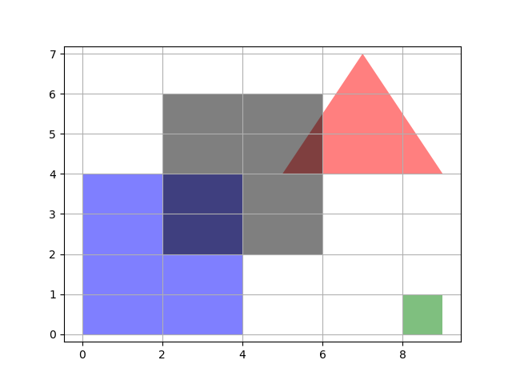
示例 2¶
>>> from arctern import GeoSeries
>>> s1 = GeoSeries(["POLYGON((7 7,9 4,5 4,7 7))"])
>>> s2 = GeoSeries(["POLYGON((6 6,2 6,2 2,6 2,6 6))", "POLYGON((0 0,0 4,4 4,4 0,0 0))"])
>>> s2.intersects(s1[0])
0 True
1 False
dtype: bool
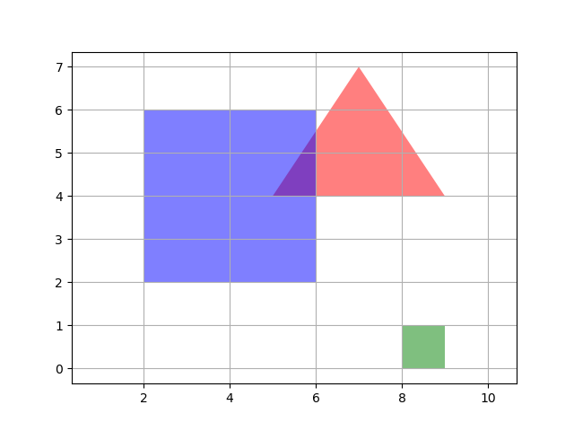
示例 3¶
>>> from arctern import GeoSeries
>>> s1 = GeoSeries(["POLYGON((8 0,9 0,9 1,8 1,8 0))"])
>>> s2 = GeoSeries(["POLYGON((6 6,2 6,2 2,6 2,6 6))", "POLYGON((0 0,0 4,4 4,4 0,0 0))"])
>>> s2.intersects(s1[0])
0 False
1 False
dtype: bool
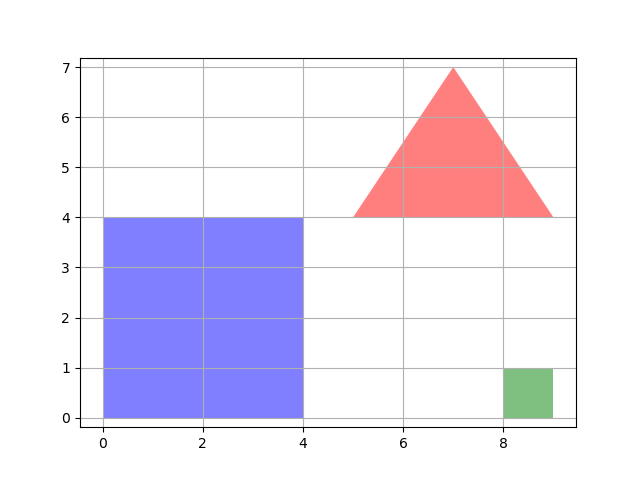
GeoSeries.within(other)¶
功能： 对于 GeoSeries 中的每个几何体以及 other 中给出的对应的几何体，检测第一个几何体是否在另一个几何体内部。
返回： GeoSeries 中每个元素对应的布尔值，指示元素是否在
other中的几何体内部。True: 第一个几何体在另一个几何体内部。
False: 第一个几何体不在另一个几何体内部。
>>> s1 = GeoSeries(["POLYGON((1 1, 4 1, 4 4, 1 4, 1 1))", "POLYGON((5 1, 7 1, 7 3, 5 3, 5 1))", "POLYGON((8 1, 9 1, 9 2, 8 2, 8 1))"])
>>> s2 = GeoSeries(["POLYGON((2 2, 2 3, 3 3, 3 2, 2 2))", "POLYGON((5 4, 6 2, 7 4, 5 4))", "POLYGON((8 3, 9 3, 9 4, 8 4, 8 3))"])
>>> s2.within(s1)
0 True
1 False
2 False
dtype: bool
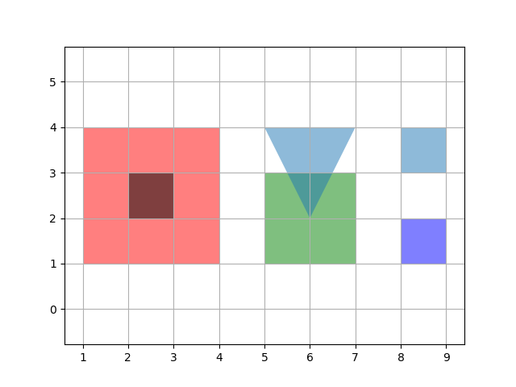
GeoSeries.contains(other)¶
功能： 对于 GeoSeries 中的每个几何体以及
other中给出的对应的几何体，检测第一个几何体是否包含另一个几何体。返回： GeoSeries 中每个元素对应的布尔值，指示元素是否包含
other中的几何体。True: 第一个几何体包含另一个几何体。
False: 第一个几何体不包含另一个几何体。
>>> from arctern import GeoSeries
>>> s1 = GeoSeries(["POLYGON((2 2, 2 3, 3 3, 3 2, 2 2))", "POLYGON((5 4, 6 2, 7 4, 5 4))", "POLYGON((8 3, 9 3, 9 4, 8 4, 8 3))"])
>>> s2 = GeoSeries(["POLYGON((1 1, 4 1, 4 4, 1 4, 1 1))", "POLYGON((5 1, 7 1, 7 3, 5 3, 5 1))", "POLYGON((8 1, 9 1, 9 2, 8 2, 8 1))"])
>>> s2.contains(s1)
0 True
1 False
2 False
dtype: bool

GeoSeries.crosses(other)¶
功能： 对于 GeoSeries 中的每个几何体以及
other中给出的对应几何体，检查第一个几何体是否与另一个几何体空间相交。“空间相交”是指两个几何体的一些但非所有内部点都相同。几何体内部的交集不得为空集，并且其维度必须小于两个输入几何体的最大维度。返回： GeoSeries 中每个元素对应的布尔值，指示元素是否与
other中的几何体空间相交。True: 第一个几何体与另一个几何体空间相交。
False: 第一个几何体不与另一个几何体空间相交。
>>> from arctern import GeoSeries
>>> s1 = GeoSeries(["POLYGON((1 1, 4 1, 4 4, 1 4, 1 1))", "POLYGON((1 1, 4 1, 4 4, 1 4, 1 1))"])
>>> s2 = GeoSeries(["LINESTRING(1 5, 5 1)", "POLYGON((2 2, 5 2, 5 5, 2 5, 2 2))"])
>>> s2.crosses(s1)
0 True
1 False
dtype: bool
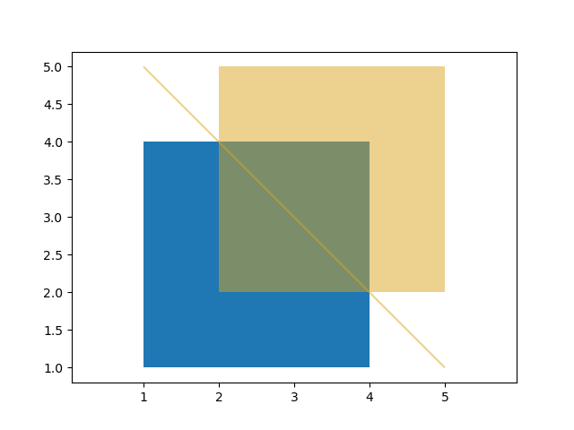
GeoSeries.geom_equals(other)¶
功能： 对于 GeoSeries 中的每个几何体以及
other中给出的对应几何体，检查第一个几何体是否与另一个几何体等价。“等价”表示两个几何体表示相同的几何体结构。返回： GeoSeries 中每个元素对应的布尔值，指示元素是否与
other中的几何体等价。True: 第一个几何体与另一个几何体等价。
False: 第一个几何体不与另一个几何体等价。
>>> from arctern import GeoSeries
>>> s1 = GeoSeries(["POLYGON((0 0,1 0,1 1,0 1,0 0))", "POLYGON((8 0,9 0,9 1,8 1,8 0))"])
>>> s2 = GeoSeries(["POLYGON((0 0,0 8,8 8,8 0,0 0))", "POLYGON((0 0,0 8,8 8,8 0,0 0))"])
>>> s2.geom_equals(s1)
0 False
1 False
dtype: bool
GeoSeries.touches(other)¶
功能： 对于 GeoSeries 中的每个几何体以及
other中给出的对应几何体，检测它们是否接触。“接触”表示两个几何体具有公共点，并且公共点仅位于它们的边界上。返回： GeoSeries 中每个元素对应的布尔值，指示元素是否接触 other 中的几何体。
True: 第一个几何体接触另一个几何体。
False: 第一个几何体不接触另一个几何体。
>>> from arctern import GeoSeries
>>> s1 = GeoSeries(["POLYGON((1 1, 4 1, 4 5, 1 5, 1 1))"])
>>> s2 = GeoSeries(["POLYGON((4 2, 7 2, 7 6, 4 6, 4 2))"])
>>> s2.touches(s1)
0 True
dtype: bool
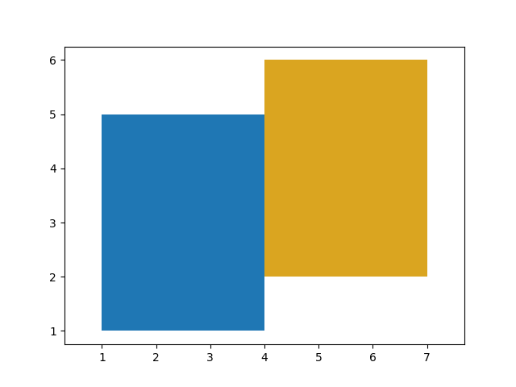
GeoSeries.overlaps(other)¶
功能： 对于 GeoSeries 中的每个几何体以及 other 中给出的对应几何体，检查第一个几何体是否与另一个几何体空间重叠。“空间重叠”表示两个几何体相交，但一个不完全包含另一个。
返回： GeoSeries 中每个元素对应的布尔值，指示元素是否与 other 中的几何体空间重叠。
True: 第一个几何体与另一个几何体空间重叠。
False: 第一个几何体不与另一个几何体空间重叠。
>>> from arctern import GeoSeries
>>> s1 = GeoSeries(["POLYGON((1 1, 4 1, 4 5, 1 5, 1 1))"])
>>> s2 = GeoSeries(["POLYGON((3 2, 6 2, 6 6, 3 6, 3 2))"])
>>> s2.overlaps(s1)
0 True
dtype: bool
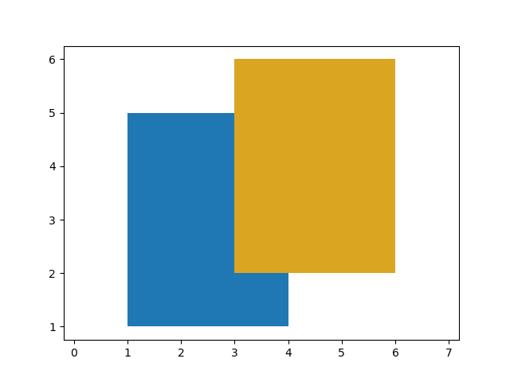
GeoSeries.distance(other)¶
功能： 对于 GeoSeries 中的每个几何体以及
other中给出的对应几何体，计算它们之间的最小 2D 笛卡尔（平面）距离。返回： GeoSeries 中的每个几何体与
other中给出的对应几何体之间的距离。
>>> from arctern import GeoSeries
>>> s1 = GeoSeries(["LINESTRING(8 0,9 2)", "POINT(10 2)"])
>>> s2 = GeoSeries(["POLYGON((0 0,0 8,8 8,8 0,0 0))", "POLYGON((0 0,0 8,8 8,8 0,0 0))"])
>>> s2.distance(s1)
0 1.0
1 2.0
dtype: float64
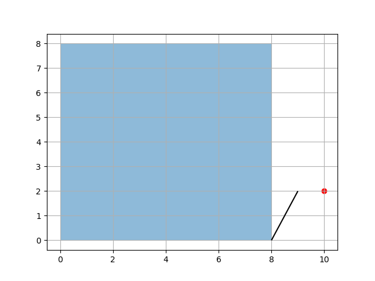
GeoSeries.distance_sphere(other)¶
功能： 对于 GeoSeries 对象中的每个几何体，根据经纬度坐标计算地球表面两点之间的最短球面距离。该方法使用 SRID 定义的地球和半径。
返回： 浮点型的 pandas.Series
>>> from arctern import GeoSeries
>>> s1 = GeoSeries(["POINT(10 2)"], crs="EPSG:4326")
>>> s2 = GeoSeries(["POINT(10 3)"], crs="EPSG:4326")
>>> s2.distance_sphere(s1)
0 111226.3
dtype: float64
GeoSeries.hausdorff_distance(other)¶
功能： 对于 GeoSeries 中的每个几何体以及
other中给出的对应几何体，计算它们之间的最小球面距离。此方法使用由 SRID（Spatial Reference Identifier，空间参考标识符）定义的球体派生的球形地球和半径。返回： GeoSeries 中每个几何体 与 other 中给定的对应几何之间的球面距离。
>>> from arctern import GeoSeries
>>> s1 = GeoSeries(["POLYGON((0 0 ,0 1, 1 1, 1 0, 0 0))", "POINT(0 0)"])
>>> s2 = GeoSeries(["POLYGON((0 0 ,0 2, 1 1, 1 0, 0 0))", "POINT(0 1)"])
>>> s2.hausdorff_distance(s1)
0 1.0
1 1.0
dtype: float64
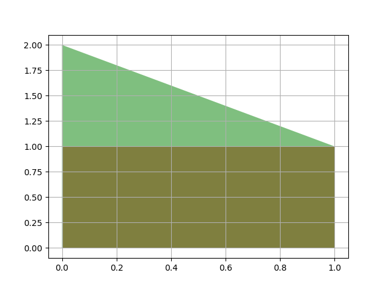
GeoSeries.intersection(other)¶
功能： 对于 GeoSeries 中的每个几何体以及 other 中给出的对应几何体，计算它们的交集。
返回： GeoSeries 中的每个几何体与 other 中给出的对应几何体的交集。
>>> from arctern import GeoSeries
>>> s1 = GeoSeries(["POLYGON ((1 1,1 2,2 2,2 1,1 1))"])
>>> s2 = GeoSeries(["POLYGON ((2 1,3 1,3 2,2 2,2 1))"])
>>> s2.intersection(s1)
0 LINESTRING (2 2,2 1)
dtype: GeoDtype
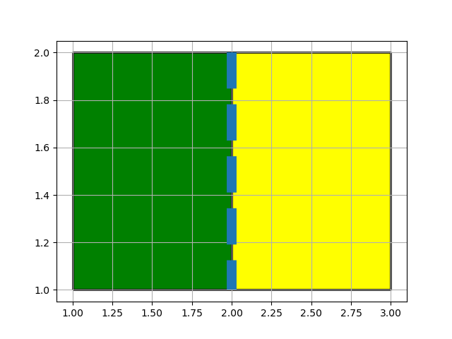
GeoSeries.polygon_from_envelope(min_x, min_y, max_x, max_y, crs=None)¶
功能： 在给定的空间范围内构造矩形 POLYGON 对象。矩形的边平行于坐标轴。
min_x、min_y、max_x和max_y是 Series，因此可以批量创建多边形。这四个 Series 中的值的数量应相同。假设min_x的维度为 N，则此函数返回的 GeoSeries 应包含 N 个矩形。索引为 i 的矩形的形状和位置由其左下顶点 (min_x[i], min_y[i]) 和右上顶点 (max_x[i], max_y[i]) 定义。返回： 给定空间范围内的矩形 POLYGON 对象的序列。
>>> from pandas import Series
>>> from arctern import GeoSeries
>>> min_x = Series([0.0, 1.0])
>>> max_x = Series([2.0, 1.5])
>>> min_y = Series([0.0, 1.0])
>>> max_y = Series([1.0, 1.5])
>>> GeoSeries.polygon_from_envelope(min_x, min_y, max_x, max_y)
0 POLYGON ((0 0,0 1,2 1,2 0,0 0))
1 POLYGON ((1 1,1.0 1.5,1.5 1.5,1.5 1.0,1 1))
dtype: GeoDtype
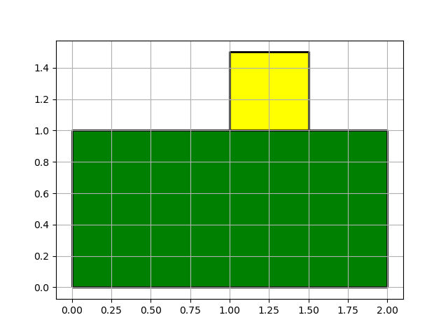
GeoSeries.point(x, y)¶
功能： 根据给定的坐标构造 POINT 对象。
x和y是 Series，因此可以批量创建点。这两个 Series 中的值的数量应相同。 假设x的维度为 N，则此函数返回的 GeoSeries 应包含 N 个点。第 i 个的点的位置由其坐标 (x[i], y[i]) 定义。返回： POINT 对象的序列。
>>> from pandas import Series
>>> from arctern import GeoSeries
>>> x = Series([1.3, 2.5])
>>> y = Series([1.3, 2.5])
>>> GeoSeries.point(x, y)
0 POINT (1.3 1.3)
1 POINT (2.5 2.5)
dtype: GeoDtype
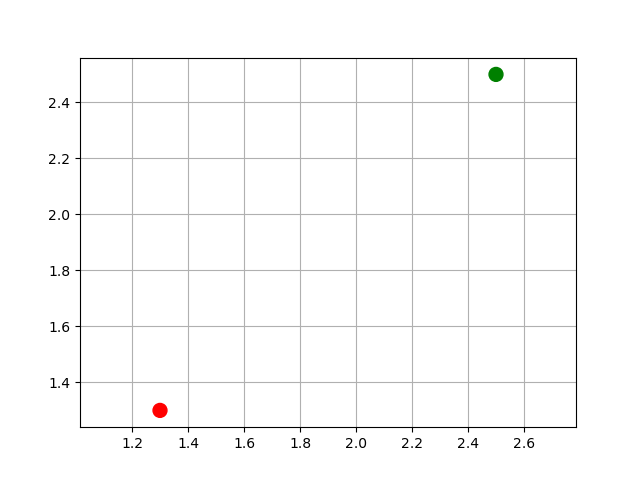